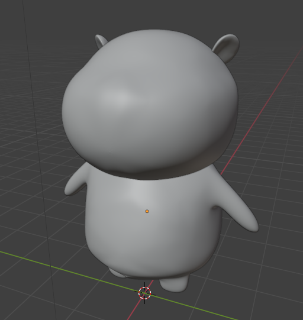
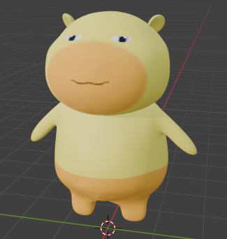
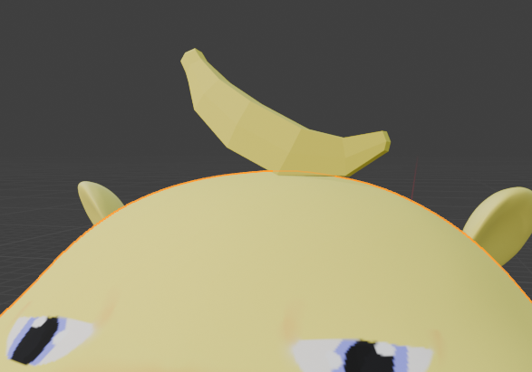
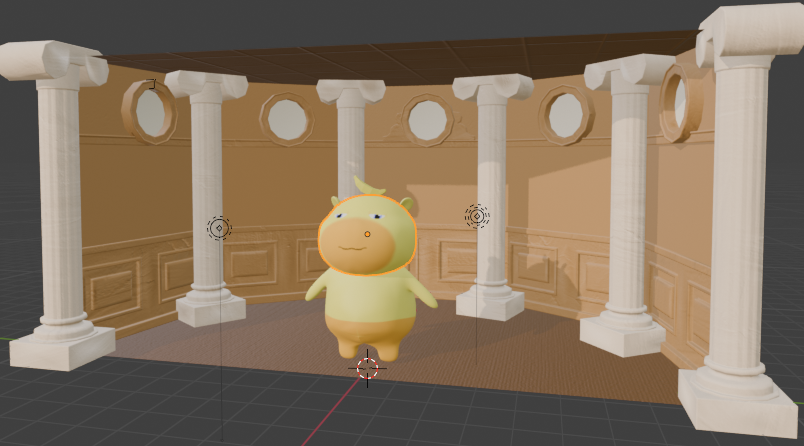
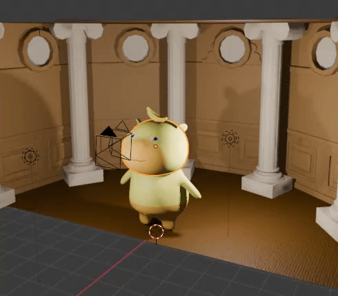

Introduction
This is a process documentation of this rendering.
The documentation includes stages from inspiration, modeling, and rendering. Have fun!
Inspiration
First of all, the inspiration of each elements.

The Origin
This Meme Gif is really funny and I want to make my own version.
I decided to change some elements in it.
Lulu the Capybara
This cute creature named Lulu is pretty popular on chinese social media.
I want to give it a try and model it.

The Banana
If you checked my previous GIXD 503 assignments. You will notice I kept elements of bananas.
I'm continuing this fun little eastern egg.

The Office
The scene needs a background, Saul Goodman wouldn't mind me borrowing his office.
Modeling
Now let's move to blender and start modeling.
Modeling Lulu
I started with Lulu's model, this little guy consists of a round head, a body, 2 arms and 2 legs. I used proportional editing to sculpture these components.
During the process, I also learned how to do mirror and subdivision modifiers to create symmatric and smooth models.
Then, I added material to the mesh. To add details, I also learned how to do UV painting.
After unwarping the UV and paint on the eyes, pants and other details. I got Lulu in color.
Modeling the Banana
I kept the low poly aesthetic for the banana. So it's fairly easier to make.
With a few exturde I turned a cube into a Banana. It's then placed on Lulu's head.
The Office
I searched on Google got a free model of Saul Goodman's office.
However it's a white model so I manually added color to each component in it.
Cameras and Lights
Lastly, I aranged cameras and ligths round the model to achieve the effect in the Gif.
I also learned how to use make animation and got the cameras to move.
Rendering
Finally, send the scene to render queue!
I set the render to have lower resolution and frame rate to maintain the file size and the sketchy effect.
Blender then rendered a image sequence, which I uploaded to a GIF maker and turned into the GIF.
Here are some other renderings of the scene.
Conclusion
Creating this scene was a lot of fun.
I got to learn Mirror and subdivision modifiers, UV painting and Animation in Blender.
Looking forward to exploring more features of blender!